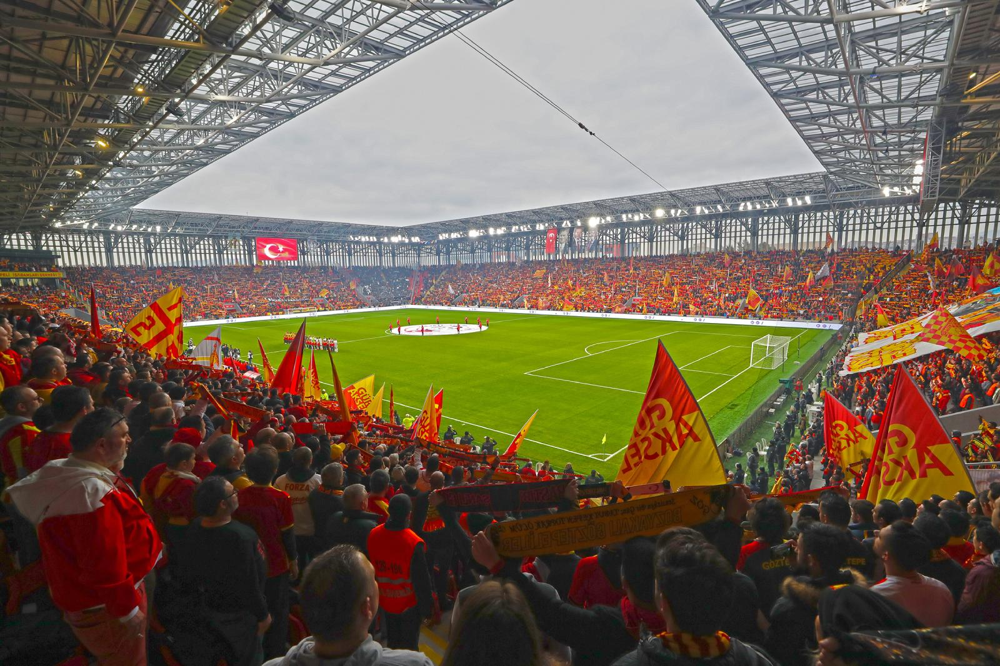

Göztepe Spor Kulübü, 14 Haziran 1925 tarihinde İzmir’de kurulmuştur. Türkiye'nin en köklü kulüplerinden biridir ve futbol başta olmak üzere birçok branşta faaliyet göstermiştir.
Göztepe'nin maçlarını oynadığı Gürsel Aksel Stadyumu, 2020 yılında açılmıştır ve yaklaşık 20.000 seyirci kapasitelidir. İzmir'in Güzelyalı semtinde yer almaktadır.
Göztepe taraftarları “GözGöz” olarak bilinir. Takıma olan tutkuları, coşkulu destekleriyle bilinir. Özellikle Karşıyaka ile oynanan İzmir derbileri büyük ilgi görmektedir.
Kulüp, başta futbol olmak üzere voleybol, hentbol, yüzme gibi farklı branşlarda da faaliyet göstermektedir.